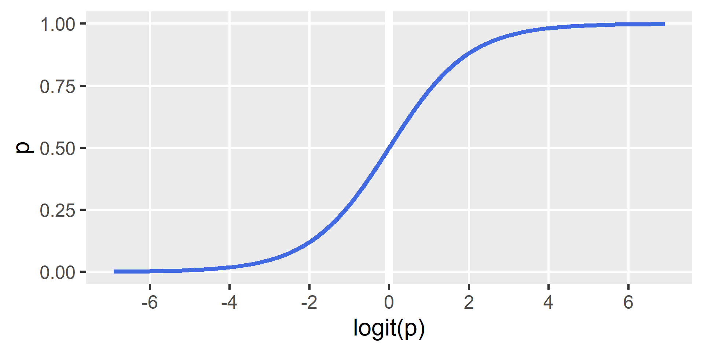
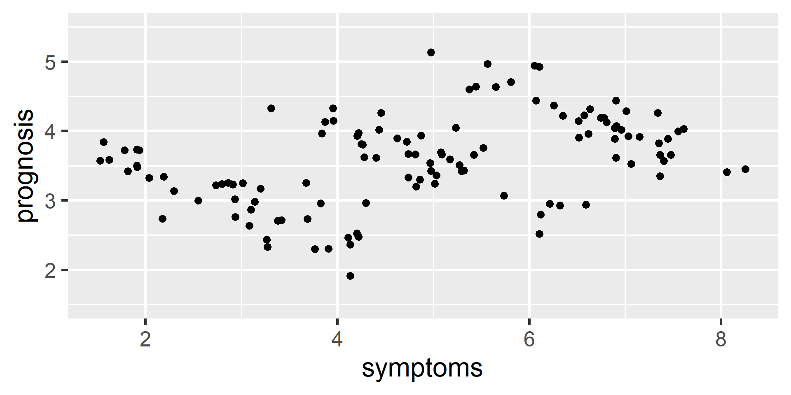
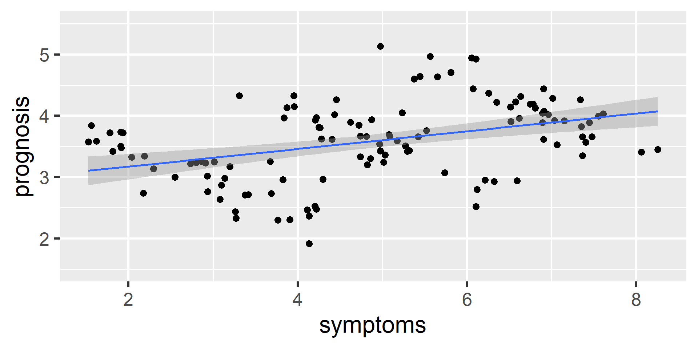
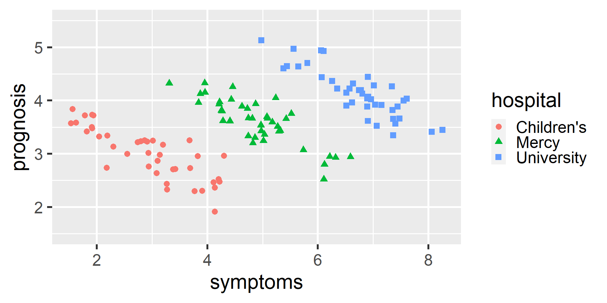
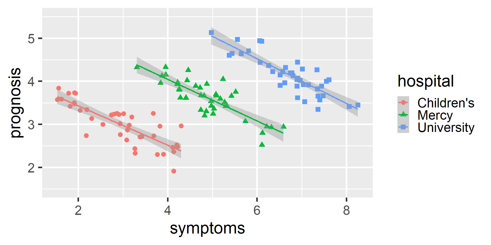

## Load packages (after installing, if needed)
library(tidyverse)
library(easystats)
## Read in some example binary data and mutate the outcome to be 0 vs. 1
titanic <-
read_csv("titanic.csv") |>
mutate(survived = if_else(survived == "yes", true = 1, false = 0)) |>
print()
## Visualize the relationship between fare and survival
ggplot(titanic, aes(x = fare, y = survived)) +
geom_point() +
geom_smooth()
## Fit a basic regression using LM
fit <- lm(
formula = survived ~ fare,
data = titanic
)
model_parameters(fit)
model_parameters(fit) |> print_md() #looks better in quarto
model_performance(fit)
plot(estimate_expectation(fit))
check_model(fit)
## Fit a logistic regression using GLM
fit2 <- glm(
formula = survived ~ fare,
family = binomial(link = "logit"),
data = titanic
)
model_parameters(fit2)
model_parameters(fit2, exponentiate = TRUE)
model_performance(fit2)
plot(estimate_link(fit2))
plot(estimate_expectation(fit2))
check_model(fit2)
## Estimate the model's expectation for specific values of the predictor(s)
estimate_expectation(fit2, tibble(fare = c(10, 50, 100)))
## Note: To fit a probit binary regression, just use binomial(link = "probit")Intermediate R
for Social Scientists
Workshop Day 3B | 2023-06-07
Jeffrey M. Girard | Pitt Methods

Generalized
Linear Modeling
The Linear Model (LM)
\[ \begin{align} \mu_i &= b_0 + b_1 x_{1i} + \cdots + b_m x_{mi}\\ y_i &\sim \text{Gaussian}(\mu_i, \sigma) \end{align} \]
- The first (structural) term is linear (i.e., the sum of products)
- It assumes that \(\mu_i\) can vary indefinitely, i.e., \(y \in (-\infty,\infty)\)
- The second (random) term describes the shape of the residuals
- It assumes they are normally (Gaussian) distributed around \(\mu_i\)
- It assumes they have constant variance (i.e., there is only one \(\sigma\))
The Generalized LM (GLM)
- What happens when these assumptions are violated?
- Our parameters and inferences will be biased
- Our model may make impossible predictions
- GLM addresses this issue by making two changes
- Adds a family, i.e., specifies a different shape of the residuals
- Adds a link function, i.e., transforms \(y\) to vary indefinitely
\[ \begin{align} \color{ForestGreen}{\text{link}}(\mu_i) &= b_0 + b_1 x_{1i} + \cdots + b_m x_{mi} \\ y_i &\sim \color{blue}{\text{family}}(\mu_i, \ldots) \end{align} \]
Basic GLM Families
- Normal: \(y \in \mathbb{R}\), use
gaussian()with identity link - Nonnegative: \(y \in \mathbb{R}^+\), use
Gamma()with inverse link - Binary: \(y \in \{0,1\}\), use
binomial()with logit/probit link - Counts: \(y \in \{0, 1, 2, ...\}\), use
poisson()with log link
- Many advanced/specialized GLM families are also available!
Binary Regression
- Binary regression is used when \(y\) is binary, i.e., \(0\) or \(1\)
- e.g., Is the patient healthy (0) or sick (1)?
- e.g., Did the student fail (0) or pass (1)?
- e.g., Is the attribute absent (0) or present (1)?
- e.g., Was the coin flip heads (0) or tails (1)?
The Binomial Family
\[ k \sim \text{Binomial}(n,p) \]
- \(n\in\{0,1,2,...\}\) — the number of trials
- \(p\in[0,1]\) — the probability of success in each trial
- \(k\in\{0,1,...,n\}\) — the number of successes
- This family applies to binary cases when \(n=1\)
- e.g., If I flip one coin, how many landed heads?
Logistic Regression
\[ \begin{align} \text{logit}(p_i) &= b_0 + b_1 x_{1i} + \cdots + b_m x_{mi} \\ y_i &\sim \text{Binomial}(1, p_i) \end{align} \]
- We can’t predict \(p\) directly because it is bounded, \(p\in[0,1]\)
- The logit link makes \(p\) unbounded, \(\text{logit}(p)\in(-\infty,\infty)\)
\[\text{logit}(p)=\log(\text{Odds}(p))=\log\left(\frac{p}{1-p}\right)\]
The Logit Link
Interpretation
- Our slopes (\(b_m\)) will be in logit (log-odd) units
- \(b_m>0\) indicates increased prob., \(b_m<0\) decreased
- We can exponentiate them to convert to Odds Ratios
- If \(b_1=0.3\), then \(OR=e^{0.3}=1.35\) times the odds of success (or a 35% increase) when increasing \(x_1\) by 1
- If \(b_1=-0.3\), then \(OR=e^{-0.3}=0.74\) times the odds of success (or a 26% decrease) when increasing \(x_1\) by 1
Binary Regression Live Coding
Count Regression
- Count regression is used when \(y\) is a whole number
- Counts can be bounded (i.e., have a maximum number)
- e.g., how many answers on the test were correct?
- For these, we can re-use the Binomial family \((n>0)\)
- Counts can also be unbounded (i.e., no maximum)
- e.g., how many hospitalizations in the last 10 years?
- For these, we can use Poisson or Negative Binomial
The Poisson Family
\[ k \sim \text{Poisson}(\lambda) \]
- \(\lambda\in(0,\infty)\) — occurrence rate
- \(k\in\mathbb{N}_0\) — number of occurrences
Poisson Regression
\[ \begin{align} \log(\lambda_i) &= b_0 + b_1 x_{1i} + \cdots + b_m x_{mi} \\ y_i &\sim \text{Poisson}(\lambda_i) \end{align} \]
- We can’t predict \(\lambda\) directly; it is bounded \(\lambda\in(0,\infty)\)
- The log link makes \(\lambda\) unbounded, \(\log(\lambda)\in(-\infty,\infty)\)
Interpretation
- Our slopes (\(b_m\)) will be in log units
- \(b_m>0\) indicates increased rate, \(b_m<0\) decreased
- We can exponentiate to convert to Incidence Rate Ratios
- If \(b_1=0.3\), then \(IRR=e^{0.3}=1.35\) times the incidence rate (a 35% increase) when increasing \(x_1\) by 1
- If \(b_1=-0.3\), then \(IRR=e^{-0.3}=0.74\) times the incidence rate (a 26% decrease) when increasing \(x_1\) by 1
Count Regression Live Coding
# Read in some example count data
disc <- read_csv("discoveries.csv")
disc
# Visualize the relationship between year and discovery count
ggplot(disc, aes(x = year, y = count)) +
geom_point() +
geom_smooth()
# Fit a linear regression using LM
fit <- lm(
formula = count ~ poly(year, degree = 2),
data = disc
)
model_parameters(fit)
model_performance(fit)
plot(estimate_relation(fit))
check_model(fit)
# Fit a poisson regression using GLM
fit2 <- glm(
formula = count ~ poly(year, degree = 2),
family = poisson(link = "log"),
data = disc
)
model_parameters(fit2)
model_parameters(fit2, exponentiate = TRUE)
model_performance(fit2)
plot(estimate_relation(fit2))
# Advanced: Overdispersion and quasi-poisson
check_overdispersion(fit2)
fit3 <- glm(
count ~ poly(year, degree = 2),
family = quasipoisson(link = "log"),
data = disc
)
model_parameters(fit3)
model_parameters(fit3, exponentiate = TRUE)
plot(estimate_relation(fit3))
# Compare parameters between poisson and quasi-poisson
compare_parameters(fit2, fit3, select = "ci_p2")Multilevel (Mixed Effects) Modeling
Conceptual Overview
- LM and GLM both assume independent residuals
- This is violated by clustered and longitudinal data
- The estimated SEs will be biased (usually too small)
- Clustered data has a higher level of organization
- e.g., students from same classroom are more similar
- e.g., participants from same country are more similar
- Longitudinal data is repeated sampled from same source
- e.g., each participant responds to multiple trials
- e.g., the global temperature is measured every week
Cluster-Robust Standard Errors
- The basic OLS standard errors will be biased with clustered data
- CR-SEs use a statistical procedure to try to correct this bias
- This is convenient when clustering is just a “nuisance”
- Estimate the regression coefficients using OLS (these are unchanged)
- Estimate the CR-SEs using a more complex formula, e.g., based on clusters \(J\)
- Interpret the coefficients and CR-SEs as you would in a basic LM or GLM
\[ \begin{align} Var^{OLS}(\hat{b})&=\sigma^2(\mathbf{X}^\intercal\mathbf{X})^{-1} \\ Var^{CR}(\hat{b})&=(\mathbf{X}^\intercal\mathbf{X})^{-1}\sum_{j=1}^J(\mathbf{X}_j^\intercal e_je_j^\intercal \mathbf{X}_j)(\mathbf{X}^\intercal \mathbf{X})^{-1} \end{align} \]
In the latter, we sum residuals by cluster instead of observation
Cluster-Robust Standard Errors
library(tidyverse)
library(easystats)
library(sandwich)
mlmath <- read_csv("mlmath.csv")
mlmath
mlmath |> count(school)
mlmath |> count(public)
# Fit LM ignoring clustering within schools
fit <- lm(
formula = math ~ 1 + homework,
data = mlmath
)
model_parameters(fit)
model_performance(fit)
estimate_relation(fit) |> plot()
# Estimate cluster-robust standard errors
model_parameters(
fit,
vcov = "vcovCL",
vcov_args = list(type = "HC1", cluster = mlmath$school)
)
estimate_relation(
fit,
vcov = "vcovCL",
vcov_args = list(type = "HC1", cluster = mlmath$school)
) |>
plot()Simpson’s Paradox
However, reaching the right conclusions may require knowing the clusters…
Simpson’s Paradox
Here it looks like having worse symptoms predicts a better prognosis…
Simpson’s Paradox
But this data actually comes from three different hospitals!
Simpson’s Paradox
Within each hospital, the relationship is the opposite!
Levels of Clustering
- We can think and talk about clustered data as having multiple levels (hence MLM)
- We number levels from \(1\) to \(M\) where lower numbers represent more specific levels
- e.g., Data is collected from students (L1) nested within classrooms (L2)
- e.g., Data is collected from students (L1) in classrooms (L2) in schools (L3)
- e.g., Data is collected from timepoints (L1) nested within participants (L2)
- e.g., Data is collected from timepoints (L1) in participants (L2) in countries (L3)
- What is and isn’t considered a level?
- At each level, we are sampling from a broader population
- Thus, levels need to be random variables (and are usually discrete)
- If we repeated the study, would the variable’s values be the same?
Variables at Different Levels
- We can have variables that vary at (or describe) each level
- L1: each student’s
age,sex, andtest_score - L2: each classroom’s
subjectandn_students - L3: each school’s
budgetandcharter_status
- L1: each student’s
- In standard MLM, the outcome/DV has to be on L1
- But we can still use higher level predictors
- We can even have cross-level interactions
Mixed Effects (Multilevel) Modeling
When we have multiple clusters of data, we have several options for fitting linear models
Complete Pooling: Fit a single line to all the data, ignoring clustering
No Pooling: Fit a separate line for each cluster, ignoring any similarity
Partial Pooling: Fit a distribution of similar lines to the data, one for each cluster
Multilevel modeling uses the partial pooling approach, which yields two types of effects
Fixed Effects either describe an effect assumed to be the same for all clusters,
or describe the center of an effect’s distribution across clustersRandom Effects describe how each cluster deviates from the fixed effect and therefore create the distribution across clusters (can be estimated or not)
Example Models
- Null Model
- Each cluster (school) has its own intercept (average math score)
- There are no predictors/slopes added (fixed or random)
- Random Intercepts (RI) Model
- Each cluster (school) has its own intercept (average math score)
- The slope (homework effect) is fixed and applies to all clusters (schools)
Example Models
- Random Intercepts and Slopes (RIS) Model
- Each cluster (school) has its own intercept (average math score)
- Each cluster (school) has its own slope (homework effect)
- Cross-Level Interaction Model
- An L1 (student) outcome will be regressed on an L2 (school) predictor
- An L1 (student) predictor will interact with an L2 (school) predictor
Null and RI Models Live Coding
library(lme4)
library(merDeriv)
library(ggeffects)
# ==============================================================================
# Fit and examine null model
fit_null <- lmer(
formula = math ~ 1 + (1 | school),
data = mlmath
)
model_parameters(fit_null) |> print_md()
model_performance(fit_null) |> print_md()
# ==============================================================================
# Fit and examine random intercepts model
fit_ri <- lmer(
formula = math ~ 1 + homework + (1 | school),
data = mlmath
)
model_parameters(fit_ri) |> print_md()
model_performance(fit_ri) |> print_md()
plot(estimate_relation(fit_ri))
## random effects (deviations from the fixed effect)
estimate_grouplevel(fit_ri) |> print_md()
estimate_grouplevel(fit_ri) |> plot()
## fixed effects + random effects (deviation)
estimate_grouplevel(fit_ri, type = "total") |> print_md()
## plot the line for each cluster (school)
ggpredict(fit_ri, c("homework", "school"), type = "random") |>
plot(colors = 1:10, ci = FALSE)RIS and CLI Models Live Coding
# ==============================================================================
# Fit and examine random intercepts and slopes model
fit_ris <- lmer(
formula = math ~ 1 + homework + (1 + homework | school),
data = mlmath
)
model_parameters(fit_ris) |> print_md()
model_performance(fit_ris) |> print_md()
plot(estimate_relation(fit_ris))
## random effects (deviations from the fixed effect)
estimate_grouplevel(fit_ris) |> print_md()
estimate_grouplevel(fit_ris) |> plot()
## fixed effects + random effects (deviation)
estimate_grouplevel(fit_ris, type = "total") |> print_md()
## plot the line for each cluster (school)
ggpredict(fit_ris, c("homework", "school"), type = "random") |>
plot(colors = 1:10, ci = FALSE)
## turn refit off (use REML) to compare models with the same fixed effects
anova(fit_ri, fit_ris, refit = FALSE)
# ==============================================================================
# Fit and examine the cross-level interaction model
fit_cli <- lmer(
formula = math ~ 1 + homework * public + (1 + homework | school),
data = mlmath
)
model_parameters(fit_cli) |> print_md()
model_performance(fit_cli) |> print_md()
plot(estimate_relation(fit_cli))
## estimate simple slopes
estimate_slopes(fit_cli, trend = "homework", at = "public") |> print_md()
## Turn refit on (use ML) to compare models with different fixed effects
anova(fit_ris, fit_cli, refit = TRUE)Centering
# Grand mean centering (good for level-2 variables)
mlmath2 <-
mlmath |>
mutate(ratio_c = center(ratio)) |>
print()
# Centering within clusters (good for level-1 variables)
mlmath3 <-
mlmath2 |>
mutate(
homework_m = mean(homework), # cluster mean (between)
homework_d = homework - homework_m, # deviation from cluster mean (within)
.by = school
) |>
print()
## Incorporating these variables into the model
fit <- lmer(
math ~ 1 + homework_m + homework_d + ratio_c + (1 + homework_d | school),
data = mlmath3
)
model_parameters(fit) |> print_md()
model_performance(fit) |> print_md()Longitudinal Considerations
# ==============================================================================
# Load example data
soccer <-
read_csv("soccer.csv") |>
mutate(across(c(Code, Played), factor)) |>
print()
# ==============================================================================
# Fit null model and examine ICC
fit0 <- lmer(
Testosterone ~ 1 + (1 | Code),
data = soccer
)
model_performance(fit0) |> print_md()
# ==============================================================================
# Fit random intercepts longitudinal model
fit1 <- lmer(
Testosterone ~ 1 + time0 + (1 | Code),
data = soccer
)
model_parameters(fit1) |> print_md()
model_performance(fit1) |> print_md()
estimate_relation(fit1) |> plot()
ggpredict(fit1, c("time0", "Code"), type = "random") |>
plot(colors = 1:25, ci = FALSE)
# ==============================================================================
# Fit random intercepts and slopes model
fit2 <- lmer(
Testosterone ~ 1 + time0 + (1 + time0 | Code),
data = soccer
)
model_parameters(fit2) |> print_md()
model_performance(fit2) |> print_md()
ggpredict(fit2, c("time0", "Code"), type = "random") |>
plot(colors = 1:25, ci = FALSE)
## Turn refit off (use REML) when comparing models with same fixed effects
anova(fit1, fit2, refit = FALSE)
# ==============================================================================
# Fit cross-level interaction model
fit3 <- lmer(
Testosterone ~ 1 + time0 * Played + (1 + time0 | Code),
data = soccer
)
model_parameters(fit3) |> print_md()
model_performance(fit3) |> print_md()
estimate_relation(fit3) |> plot()
ggpredict(fit3, c("time0", "Code", "Played"), type = "random") |>
plot(colors = 1:25, ci = FALSE)
## Turn refit on (use ML) when comparing models with different fixed effects
anova(fit2, fit3, refit = TRUE)